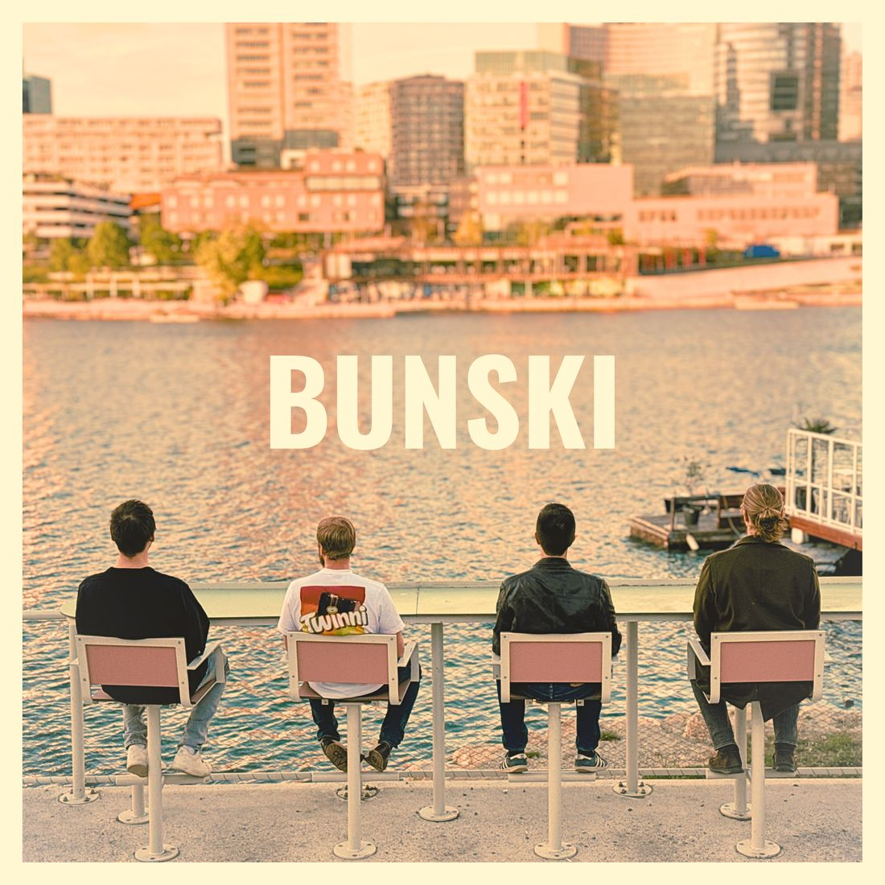

Bunski – Indierock
aus WienIndie rock
from Vienna
Vier Freunde, zwei Gitarren, Bass und Drums: treibender Gitarrenrock mit verspielter Leichtigkeit.
Four friends, two guitars, bass and drums: driving guitar rock with a playful lightness.
Über BunskiAbout Bunski
Bunski ist eine Indierockband aus Wien. Vier Freunde – Gesang, zwei Gitarren, Bass und Drums – mit einem Sound, der zwischen treibendem Gitarrenrock und verspielter Leichtigkeit pendelt. Melodien, die im Kopf bleiben, Riffs, die unter die Haut gehen, und Bum Tschak zum Mitwippen.
Bunski is an indie rock band from Vienna. Four friends—vocals, two guitars, bass, and drums—with a sound that oscillates between driving guitar rock and playful lightness. Melodies that get stuck in your head, riffs that get under your skin, and a backbeat to tap your feet to.
BesetzungLine-up
- Simon SchüttGesang, GitarreVocals, guitar
- Nicola MagriniGitarreGuitar
- Stefan NentwichBass
- Nikolaus AngelDrums
EinflüsseInfluences
The Strokes, Arctic Monkeys, Franz Ferdinand, The Beatles
Live
- Club Lucia, Wien
- Cafe Carina, Wien
- The Church International Pub, Wien
FotosPhotos
Fotos: Peter Griesser, Live@Lucia, 07.06.2026Photos: Peter Griesser, Live@Lucia, 7 June 2026
Kontakt & BookingContact & booking
Für Konzert- und Festanfragen, Presse und alles andere: Schreib uns eine E-Mail an simonschuett.music@gmail.com oder eine Nachricht auf Instagram. Wir antworten garantiert!
For gig and event enquiries, press and everything else: email simonschuett.music@gmail.com or message us on Instagram. We will get back to you!